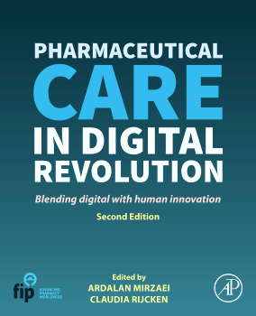

-
How to report, handle and test the effect of incomplete survey and clinical records.
-
Developing and validating questionnaires, from service quality to carer assessment.
-
What predicts where people look for health information, using systematic review, network analysis and machine learning.
-
Service quality, loyalty and marketing, from my PhD and the papers that followed.
-
Prices, availability and affordability of medicines across low- and middle-income countries.
-
Medication management guidance and information resources for carers of people with dementia.
-
Agent-based models, dashboards and the books on pharmaceutical care in a digital world.
-
Machine learning for health data, and practical guidance for pharmacists. Co-editor of the FIP AI toolkit, member of the FIP Technology Advisory Group.
-
Resilience, empathy and the use of visual dashboards in pharmacy teaching.
Selected work
-
Missing data in surveys: Key concepts, approaches, and applications
460 citations
-
How to measure a latent construct: psychometric principles for the development and validation of measurement instruments
216 citations
-
Predictors of health information–seeking behavior: systematic literature review and network analysis
91 citations
-
Marketing activity in the community pharmacy sector: a scoping review
72 citations
-
Prices, availability, and affordability of adult medicines in 54 low-income and middle-income countries: evidence based on a secondary analysis
67 citations
-
Development of a questionnaire to measure consumers’ perceptions of service quality in community pharmacies
48 citations
-
Priorities for medication management information resources for people with dementia and carers: a community-driven approach using a modified Delphi method
Newest
Selected Books and reports
-
